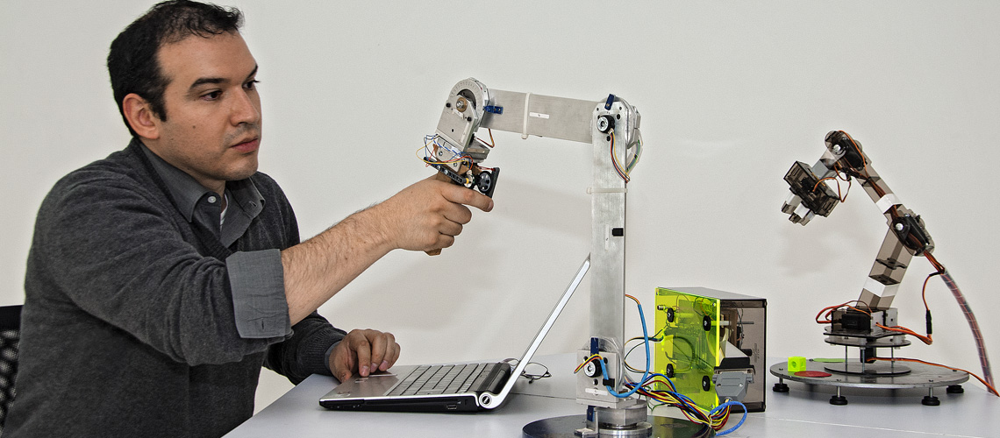

IMPORTANCIA DE LA xxxxxxAsí entonces, la importancia de la ingeniería mecatrónica reside en que permite 1.concepción de la solución 2.la ingeniería básica 3.la ingeniería de detalle 4.diseño 5.construcción 6.integración 7.el control 8.la puesta en marcha y validación en campo bajo normas y pruebas protocolarias. PODCAST IMPORTANCIA |
LA IMPORTANCIA DE LA MECATRONICA EN LA INDUSTRIA Muchos de las cosas que utilizamos hoy en día, dependen de equipos y sistemas mecatrónicos, por ello, la carrera técnica de Mecatrónica Industrial es una de las más importantes actualmente. |
CARRERA TECNICA DE LA MECATRONICA  |
CARRERA TECNICA DE LA MECATRONICA El profesional técnico en Mecatrónica Industrial está preparado para innovar, diseñar, evaluar, gestionar y mantener sistemas mecatrónicos. Adquieren conocimientos y habilidades en el campo de la ingeniería, aplicándola a equipos y sistemas de última generación, utilizados en el campo de la minería, construcción y transporte pesado.
|